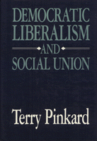

<body bgcolor="#FFFFFF" text="#000000" link="#0000FF" vlink="#CC0000" alink="#CC0000"><center><hr width="350" size="1" align="center" noshade>Defends a community oriented conception of democratic liberalism based on Hegelian and contemporary German jurisprudential theory<hr width="350" size="1" align="center" noshade><p><a href="https://cdcshoppingcart.uchicago.edu/Cart/ChicagoBook.aspx?ISBN=9780877224587&&PRESS=temple" target="_top">Buy this book!</a> | <a href="https://cdcshoppingcart.uchicago.edu/Cart/Cart.aspx?PRESS=temple" target="_top">View Cart</a> | <a href="https://cdcshoppingcart.uchicago.edu/Cart/Cart.aspx?PRESS=temple" target="_top">Check Out</a></p><p></p></center><!--none//--><h1>Democratic Liberalism and Social Union</h1>
<h3>Terry Pinkard</h3>
<P>cloth 0-87722-458-7 $32.95, Mar 87, <FONT COLOR=#990033>Out of Print</FONT>
<BR> 240 pp
</P><BLOCKQUOTE><I>"With </I>Democratic Liberalism and Social Union<I>, Terry Pinkard has joined that small company of political philosophers&#151Sandel, Galston, Walzer, and Sullivan&#151who have moved beyond the fork in the road created by Nozick's libertarianism and Rawls’s egalitarianism. Wisely and wittily, Pinkard nudges us forward toward the place where the roads cross again and citizens can flourish. A splendid book, students of the law, politics, philosophy, and ethics will delight in its pages."</I>
<br>&#151<b>William F. May</b>, The Cary M. Maguire University Professor of Ethics, Southern Methodist University<I></I></BLOCKQUOTE>
<p>One of the oldest criticisms of liberalism has been its alleged indifference and even hostility to values of character and community. Arguing that traditional critics of liberalism have looked only at parts of the democratic and liberal traditions, Pinkard abandons the "voluntarist" model currently dominant in liberal theory and defends a more community oriented conception of democratic liberalism based on Hegelian and contemporary German jurisprudential theory.
<p>Using John Rawls’s concept of social union as his point of departure, Pinkard retraces the ideas that have been major elements of social theory&#151such as personal autonomy and distributive justice&#151in the context of the theories that have sought to accommodate them&#151such as egalitarianism and utilitarianism. Democracy and liberalism, he argues, form a distinct political and social life embodying ideals of character and community, a conception not subject to the traditional criticisms. Thus, issues in contract, tort, criminal, and constitutional law are opened for reinterpretation.
<p>In recasting the position of liberalism, Pinkard considers continental philosophers, like Hegel, as well as those, like Rawls, who represent the Anglo-American tradition. By treating these traditions as equally important and by incorporating elements of each into his theory, he contributes a major development in contemporary American philosophy.
<BR>&nbsp;<H2>About the Author(s)</H2>
<P><b>Terry Pinkard</b> is Associate Professor of Philosophy, School of Foreign Service, Georgetown University and a senior research scholar at the Kennedy Institute of Ethics at Georgetown.</P>
<BR><H2>Subject Categories</H2>
<p><A HREF="/tempress/philosophy.html" TARGET="_top">Philosophy and Ethics</a>
<BR><A HREF="/tempress/law.html" TARGET="_top">Law and Criminology</a>
</p>
<p align="center"><a href="https://cdcshoppingcart.uchicago.edu/Cart/ChicagoBook.aspx?ISBN=9780877224587&&PRESS=temple" target="_top">Buy this book!</a> | <a href="https://cdcshoppingcart.uchicago.edu/Cart/Cart.aspx?PRESS=temple" target="_top">View Cart</a> | <a href="https://cdcshoppingcart.uchicago.edu/Cart/Cart.aspx?PRESS=temple" target="_top">Check Out</a></p><p><font face="Arial" size="1"><a href="copyright.html" onMouseOver="window.status='Web Copyright Policy';return true;" onMouseOut="window.status=''" title="Web Copyright Policy">&copy;</a> 2015 <a href="http://www.temple.edu" target="new" onMouseOver="window.status='Link to Temple University home page';return true;" onMouseOut="window.status=''" title="Link to Temple University home page">Temple University</a>. All Rights Reserved. http://www.temple.edu/tempress/titles/448_reg.html</font></p>